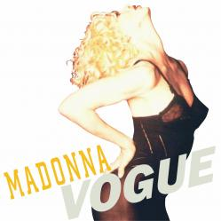

|  |
|
(Lyrics) Vogue Strike a pose Strike a pose Vogue, vogue, vogue Vogue, vogue, vogue Look around everywhere you turn is heartache It's everywhere that you go {look around} You try everything you can to escape The pain of life that you know {life that you know} When all else fails and you long to be Something better than you are today I know a place where you can get away It's called a dance floor, and here's what it's for, So Come on, vogue Let your body move to the music {move to the music} Hey, hey, hey Come on, vogue Let your body go with the flow {go with the flow} You know you can do it All you need is your own imagination So use it that's what it's for {that's what it's for} Go inside, for your finest inspiration Your dreams will open the door {open up the door} It makes no difference if you're black or white If you're a boy or a girl If the music's pumping it will give you new life You're a superstar, yes, that's what you are, you know it (chorus) Beauty's where you find it Not just where you bump and grind it Soul is in the musical That's where I feel so beautiful Magical, life's a ball So get up on the dance floor (chorus) Vogue, {Vogue} Beauty's where you find it {move to the music} Vogue, {Vogue} Beauty's where you find it {go with the flow} Greta Garbo, and Monroe Deitrich and DiMaggio Marlon Brando, Jimmy Dean On the cover of a magazine Grace Kelly; Harlow, Jean Picture of a beauty queen Gene Kelly, Fred Astaire Ginger Rogers, dance on air They had style, they had grace Rita Hayworth gave good face Lauren, Katherine, Lana too Bette Davis, we love you Ladies with an attitude Fellows that were in the mood Don't just stand there, let's get to it Strike a pose, there's nothing to it Vogue, vogue Oooh, you've got to Let your body move to the music Oooh, you've got to just Let your body go with the flow Oooh, you've got to Vogue |
(Letra en Español) Moda Toma una pose Toma una pose Moda, moda, moda Moda, moda, moda Mira alrededor, donde sea es una pena Donde quiera que vayas (mira alrededor) Intentas todo lo posible para poder escapar El dolor de la vida que conoces (vida que conoces) Cuando todo lo demas falla y esperaste mucho para ser Algo mejor de lo que eres hoy Conozco un lugar a donde te puedes escapar Se llama pista de baile, y aquí es, entonces Vamos, moda Deja que tu cuerpo se mueva con la música (se mueva con la música) Hey, hey, hey Vamos, moda Deja que tu cuerpo se vaya con el sabor (se vaya con el sabor) Sabes que puedes hacerlo Todo lo que necesitas es tu propia imaginación Entonces usala, que esperas? (que esperas) Ve adentro, busca tu fina inspiración Abrèle la puerta a tus sueños (abrele la puerta) Esto no es diferente, si eres blanco o negro O si eres chico o chica Si la música te gusta tendrás una nueva vida Eres una super estrella, si, eso es lo que eres, lo sabes La belleza està donde la encuentres No sòlo donde se fabrica El alma està en la música Es donde me siento muy hermosa Mágico, como una esfera Entonces vamos a la pista de baile Moda, {Moda} La belleza està donde la encuentres {muèvete con la mùsica} Moda, {Moda} La belleza està donde la encuentres {vamos con sabor} Greta Garbo, y Monroe Deitrich y DiMaggio Marlon Brando, Jimmy Dean En la portada de una revista Grace Kelly; Harlow, Jean Fotografìa de una bella reina Gene Kelly, Fred Astaire Ginger Rogers, bailan en el aire Ellos tienen estilo, ellos tienen gracia Rita Hayworth tenìa buen rostro Lauren, Katherine, Lana too Bette Davis, los amo Chicas con actitud Los chicos que esten de humor No se queden alli, vamos Hagan una pose, no es dificil Moda, moda Ooh, tienes que Dejar que tu cuerpo se mueva con la música Oooh, sólo tienes que Dejar que tu cuerpo siga la corriente Oooh, tienes que hacerlo Moda... |